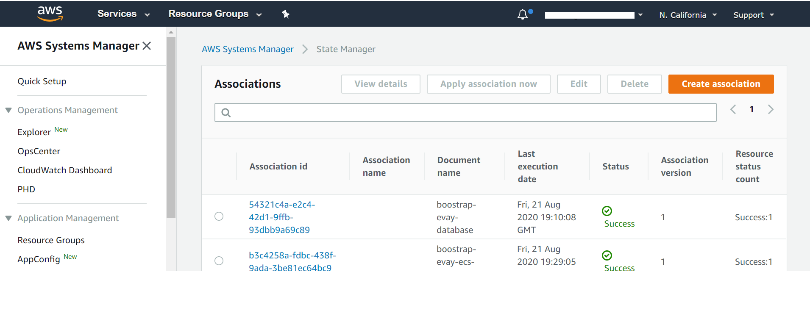

Quick Start Tutorial¶
Introduction¶
Bento follows the principle of “Configure Locally. Deploy Globally”. An end-user installs a local version of his/her application and configures it to its desired state. The updated application is then pushed to a cloud platform.
The purpose of this tutorial is to walk the end-user through process of installing a data sharing platform on AWS.
Fork the Bento Repositories¶
The Bento code-base is divided into three main components: (a) the front end (b) the back end and (c) the database. The code-base for all three are stored on GitHub. Here are the repos to fork:
Front End Repo: https://github.com/CBIIT/bento-frontend.git
Back End Repo: https://github.com/CBIIT/bento-backend.git
Data Model: https://github.com/CBIIT/BENTO-TAILORx-model
Fork each of these to create your own remote repos. Instructions on forking a GitHub repo are here.
For this tutorial we shall assume that you have named your repos:
https://github.com/CBIIT/bento-demo-frontend.git
https://github.com/CBIIT/bento-demo-backend.git
https://github.com/CBIIT/bento-demo-model.git
Set up the Bento Local Environment on your machine.¶
The ‘Bento Local’ environment is designed to run within Docker, on a user’s local machine, and can be set up within all types of operating systems- Windows, Mac and Unix flavors. This allows users to create and deploy their local copy of Bento, with minimal changes to their local environment.
Prerequisites¶
To install the ‘Bento Local’ environment you will need to:
Install Git: Bento uses GitHub to commit, store and share its code base. Instructions to install Git, on your local machine, are found here.
Install Docker: All code in Bento is containerized. You will need to install the following Docker components on your local machine: (a) Docker Desktop (b) Docker Engine and (c) Docker Compose.
(If you want to upload your own data) Ensure that your data is (a) it is Bento data model compliant and (b) you have a Neo4J dump of you data set.
The code-base to create the local environment is available at: https://github.com/CBIIT/bento-local.
For this tutorial we shall consider $src to be the folder in which you will store all your local code for Bento.
Clone the bento-local code-base in your local machine by running the following commands in
$src. The first command initializes a git repository in$src; the second, clones the bento-local repo on your machine.git init git clone https://github.com/CBIIT/bento-local
This creates a
bento-localfolder under$src.Inspect the bento-local folder, by running the following commands.
cd bento-local/ ls -al
The list of files in your bento-local folder should look like this:
drwxr-xr-x 10 <your user name> <your group name> 320 Oct 24 08:23 .
drwxr-xr-x 7 <your user name> <your group name> 224 Oct 24 08:23 ..
-rw-r--r-- 1 <your user name> <your group name> 2037 Oct 24 08:23 .env
drwxr-xr-x 12 <your user name> <your group name> 384 Oct 24 08:23 .git
-rw-r--r-- 1 <your user name> <your group name> 12904 Oct 24 08:23 README.md
drwxr-xr-x 4 <your user name> <your group name> 128 Oct 24 08:23 dataloader
-rw-r--r-- 1 <your user name> <your group name> 454 Oct 24 08:23 dataloader.yml
-rw-r--r-- 1 <your user name> <your group name> 1306 Oct 24 08:23 docker-compose.yml
drwxr-xr-x 6 <your user name> <your group name> 192 Oct 24 08:23 dockerfiles
drwxr-xr-x 6 <your user name> <your group name> 192 Oct 24 08:23 initialization
Open the
.envfile using a text editor of your choice.Set the following variables:
FRONTEND_REPO,BACKEND_REPO,MODEL_REPOto the URLS of your forked repos for the front end, back end and data model respectively.Set the variable BUILD_MODE to
dev. Note: see here for a discussion on the three modes for Bento local environment.Save and exit the
.envfile.
Here is what your .env file should like after you are done with your updates:
########################################
# #
# INITIALIZATION PROPERTIES #
# #
########################################
USE_DEMO_DATA=yes
# Set to "yes" to seed the project with the provided demo data set
BACKEND_REPO=https://github.com/CBIIT/bento-demo-backend.git
BACKEND_BRANCH=master
FRONTEND_REPO=https://github.com/CBIIT/bento-demo-frontend.git
FRONTEND_BRANCH=master
MODEL_REPO=https://github.com/CBIIT/bento-demo-model.git
MODEL_BRANCH=master
# Set these variables to the desired branches to use when initializing the project with Bento source code
########################################
# #
# RUNTIME PROPERTIES #
# #
########################################
BUILD_MODE=dev
# Defines the build type used when building the project. Available options are: demo, build, dev
The
initializationfolder inbento-localstores the intialization scripts for the Bento local enviroment. Move to the appropriateinitializationsub-folder:initialization/mac_linuxfor Mac and Linux usersinitialization/windowsfor Windows users.
This sub-folder stores the initialization script(s) for the relevant operating system. For Mac and Linux users, make the script executable and the run it:
chmod a+x init.sh
./init.sh
This script clones the code from your three repos: front-end, back-end, data model in the bento-localfolder and also creates a data folder in bento-local.
The initialization script will query you use demo data [default=yes]:. Type yes to include demo data in the data folder.
Note to advanced users: if you have your own Bento data model compliant data set as a Neo4J dump file, then you can store the dump file in the bento-local/data folder and rename it bento-data.dump. Bento will then display your data on the UI.
In the
bento-localfolder start the three docker containers with the following command:docker-compose up -d
Downloading all the image layers and creating the Docker containers takes about 5 minutes.
To test, open a browser and go to URL:
http://localhost:8085/. You should see the landing page for Bento:
Set up Bento on AWS.¶
At this point in the tutorial you will have successfully set up the Bento local environment. In this section, we will walk you through the process of installing Bento on AWS.
Prerequisites¶
To install the Bento in AWS you will need to:
Create an account on Amazon Web Services. You will need an administrator’s role on AWS, and the ability to create cloud resources. See here for instructions on creating an AWS account.
Download and run the
custodian-workstationdocker image. This image is loaded with the software packages: Terraform, Ansible and AWS CLI, that you will need to deploy your platform on AWS.
docker run -d --name custodian cbiitssrepo/custodian-workstation
docker exec -ti custodian bash
[root@5062d391c705 /]#
Configure AWS CLI credentials within the
custodian-workstationcontainer by runningaws configure. See below and here for instructions on configuring AWS CLI.
[root@5062d391c705 /]# aws configure
AWS Access Key ID [None]:
AWS Secret Access Key [None]:
Default region name [None]:
Default output format [None]:
Within the
custodian-workstationcontainer, clone the Bento Custodian repo. The folder will be downloaded into the root folder in your container.
git clone https://github.com/CBIIT/bento-custodian
The
datasub-folder underbento-local, created in the previous section, stores all the data that you have loaded onto your local version of Bento. Load files in thedatafolder to a S3 bucket. This guide gives you the instructions on creating an S3 bucket and loading local files.Note 1: AWS will require your S3 bucket name to be globally unique.
Note 2: For advanced users, you may load your own Bento-model compliant data set to the S3 bucket.
Open the
vars.tfvarsfile with an editor of your choice. The path of this file is:/bento-custodian/terraform/aws/vars.tfvars.
See/bento-custodian/terraform/aws/variables.tffor a description of the variables invars.tfvars.Update the following variables in
vars.tfvars:profile: The name of your profile as it is set in the.aws/credentialfile.region: This is the AWS region you wish to provision your resources.backend_repo: Your Back End Repo URL (in this case,https://github.com/CBIIT/bento-demo-backend.git)frontend_repo: Your Front End Repo URL (in this case,https://github.com/CBIIT/bento-demo-frontend.git)data_repo: Your Front End Repo URL (in this case,https://github.com/CBIIT/bento-demo-model.git)s3_bucket: Name of the globally unique S3 bucket loaded with Bento data.s3_folder: Name of the folder in the S3 bucket loaded with Bento data.
See below for an examplevars.tfvarsfile:
#define any tags appropriate to your environment
tags = {
ManagedBy = "terraform"
}
...
#enter the region in which your aws resources will be provisioned
region = <Region in which your AWS resources will be provisioned>
#specify your aws credential profile. Note this is not IAM role but rather profile configured during AWS CLI installation
profile = <Your AWS profile name>
...
#specify the url of the bento backend repository
backend_repo = <Back End Repo URL>
#specify the url of the bento frontend repository
frontend_repo = <Front End Repo URL>
#specify the url of the bento data repository
data_repo = <Data Model Repo URL>
#specify dataset to be used
s3_bucket = <S3 Bucket Name>
s3_folder = <S3 Folder Name>
...
Once the
vars.tfvarsfile has been updated, run the commandterraform init, in the folder/bento-custodian/terraform/aws/.Once the previous command has run successfully, run the command
terraform plan -var-file=vars.tfvarsto preview the list of resources that will be created to stand up your Bento application.If you are satisfied with the resources being created, then run the following command, in the same folder, to provision your resources:
terraform apply -var-file=vars.tfvars -auto-approve
Once deployment is complete, you will see a message similar to the following:
Apply complete! Resources: 68 added, 0 changed, 0 destroyed.
Outputs:
admin_user = evay
bastion_host_ip = 12.13.14.15
custodian_api_endpoint = http://evay-alb-2073444928.us-east-1.elb.amazonaws.com/api/graphql/
custodian_url = http://evay-alb-2073444928.us-east-1.elb.amazonaws.com
It takes about 10 minutes for complete deployment.
You can monitor the deployment process on AWS State Manager.
Open SSM
Click State Manager in the left pane of the navigation
You will see the current status of the deployment. If everything goes well the status should change from Pending to Success as shown below.
Deployment Pending

Deployment Successful 
Once deployment has been successfully completed navigate to the
custodian_url(see step 7.) to view the application installed on AWS. The application should look and behave like your local copy of Bento.